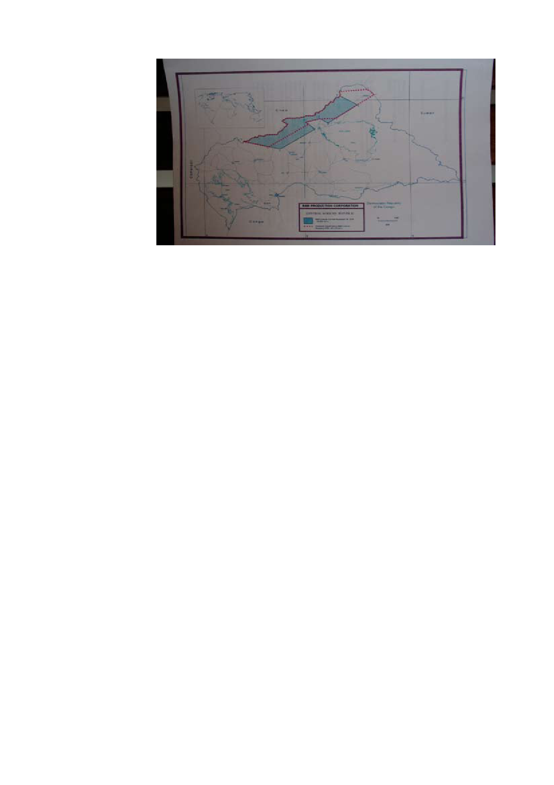

CAR
Map of oil concession (IPIS 2008)
Part 2: Presentation of the map
collection
Below we discuss the different maps which are an integrated and essential
part of this analysis. They can be consulted on the IPIS website:
www.ipisresearch.be/mapping_car.php
Cartographic sources
As for most of the African countries, there is no accurate, complete and up-
to-date cartographic material on the Central African Republic as a whole.
Consequently the IPIS maps have been based on several sources. An
important work was done in 1996, when village locations were recorded with
GPS in a systematic way (SIGCAF project). Other important cartographic
sources in GIS format were kindly put at our disposal by HDPT CAR and
LACCEG (University of Bangui). Very helpful were also the IGN maps Carte
de l’Afrique Centrale au 1/200 000 – République centraficaine (1955-1984)
and Carte touristique République centraficaine 1 : 1 500 000 (3rd edition,
1980).
Because of the incompleteness of the existing material, we have not
been able to locate all of the villages mentioned in our sources. Moreover,
sometimes no village name is known, only the approximate distance from
a nearby town. We have positioned information relating to such places in a
place nearby.
The basic map ‘Central African Republic’
The Central African Republic map is the necessary background on which our
security information is projected. It contains basic geographical information
such as the boundaries of prefectures and sub-prefectures, villages and
21